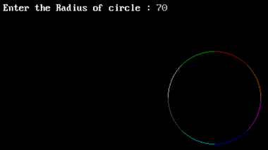

#include<stdio.h>
#include<dos.h>
#include<graphics.h>
#include<conio.h>
void main() {
int gd=DETECT, gm=DETECT;
int r, x, y, midx, midy;
float p;
clrscr();
initgraph(&gd,&gm,"c:\\turboc3\\bgi");
printf("Enter the Radius of circle : ");
scanf("%d",&r);
x=0;
y=r;
p=1.25 - r;
midx=getmaxx()/2; //To get the max position (Bottom-Right corner) of screen.
midy=getmaxy()/2; //Dividing by 2 to get the centre of screen.
do {
putpixel(midx+ x, midy+ y , 1); //All possible 8 combinations to draw 8 Segments
putpixel(midx- x, midy- y , 2); //1,2,3... represents color you can set any one
putpixel(midx- x, midy+ y , 3);
putpixel(midx+ x, midy- y , 4);
putpixel(midx +y, midy+ x , 5);
putpixel(midx +y, midy -x , 6);
putpixel(midx -y, midy -x , 7);
putpixel(midx -y, midy +x , 8);
x++;
if(p<0) {
p=p+2*x+1;
} else {
y--;
p=p+2*(x-y)+1;
}
} while(x<=y);
getch();
closegraph();
}
Output:
